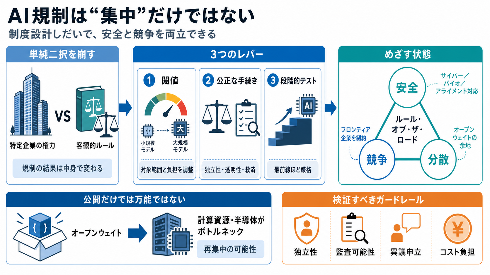

Amodei vs Baker: The $500M AI Regulation Line
Over August 15-16, 2026, Gavin Baker of Atreides Management and Anthropic's Dario Amodei ran the clearest public exchang…

“規制＝取り込み（regulatory capture）＝集中”という図式に、段階的テストと制度設計で別の結論を出せる可能性がある。
規制の結果は「制度の中身」に依存する。閾値、手続きの公平性、透明性、救済が変われば、権力は“特定企業”ではなく“客観的なルール”へ移ることがありうる。
狙いはサイバー／バイオ／アライメント等のリスク低減だけでなく、フロンティア企業の権力バランスも制度的に制約すること。
フロンティア（frontier）モデルにはより厳しい事前評価を課し、オフフロンティア（off-frontier）側には差別化したテストで相対的な参入余地を作る、という考え方。
カリフォルニア州では、SB53のように「売上・学習コストが一定以下は適用外」などの設計が議論され、SB1047は評価に揺れがある（一定の閾値で“対象外”が出る等）。
例えとして、脆弱な個人の権利を守る裁判制度のように、“公正で客観的なルール”へ権力を移すことで、分散効果が生まれうる。
オープンウェイト（open-weights）は分散に寄与しうるが、計算資源・半導体など最終ボトルネックを握る側へ、集中が再移転しうる。
望む規制ルートの失敗という見方には同意せず、プレ・デプロイメント（事前）テストと、オープンウェイトが進んで“よりフロンティアに近づいた段階でのテスト”を支持する。
抜粋では制度設計の詳細が不足するため、条文・運用文書・テストプロトコルの一次資料で検証する。
Over August 15-16, 2026, Gavin Baker of Atreides Management and Anthropic's Dario Amodei ran the clearest public exchang…
California's SB 53, a light-touch safety bill that requires the largest AI developers to make frontier model safety prot…
Amodei proposed a regulatory framework focused on strict testing for cutting-edge models while imposing lighter oversigh…
CEO Dario Amodei has pushed back against claims that regulating artificial intelligence (AI) would inevitably concentrat…
CEO Dario Amodei has repeatedly warned that AI capability jumps could outpace safety systems, especially as models grow …